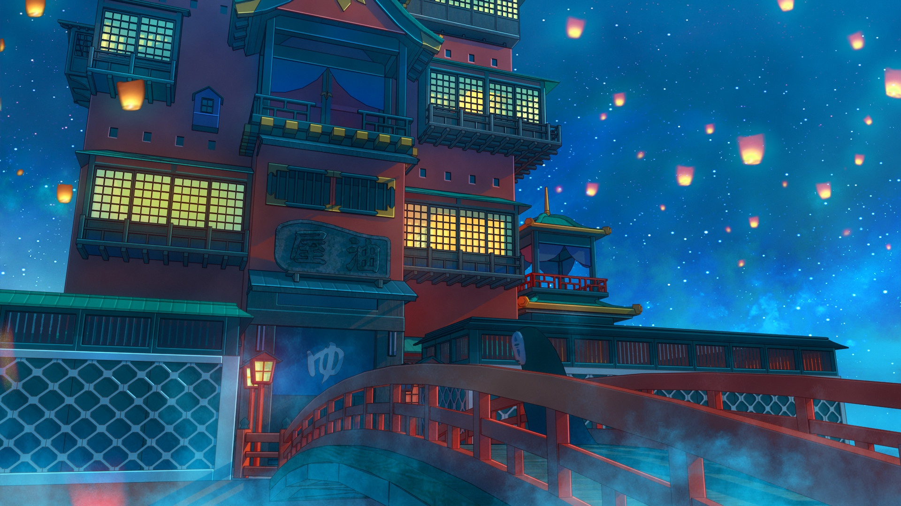

Spirited away is an animated film directed and written by hayao miyazaki and produced by studio ghibli. The film was officially released in Japan on July 20, 2001. It tells the story of Chihiro, a teenage girl who accidentally comes to the spirit world. It won the best animated feature at the 2003 Academy Awards. It is also the first and the only animated feature that win the golden bear at the three major European film festivals.
STORY SYNOPSIS
In the process of moving with her parents, chihiro ogino, a 10-year-old girl, mistakenly breaks into the forbidden land of human beings -- the hidden world of god. The street food attracted chihiro's parents, and she had to come to the bridge alone. Suddenly, a strange boy scolded her for walking across the river. At this time, she found that parents become pigs because of gluttony, she also gradually become transparent. When chihiro was helpless, the boy helped her, told her how to save her parents, and told chihiro his name -- white dragon. At that, chihiro started his work in the soup house, and changed his name to chihiro. During this period, boiler grandpa, Ling has been helping her; White dragon also took her to see her parents, comfort her; She met a faceless man during this period. One day, chihiro found the injured white dragon, in that only money mother-in-law can save the white dragon, she set foot on the road to save the white dragon. At this time, the white dragon into the dragon body to meet chihiro, on the way back, chihiro help find the real name of the white dragon - amber river god. Before leaving the hidden world, white dragon and chihiro make a promise -- to meet again. Eventually, chihiro and his parents return to the human world.
MANUFACTURING COMPANY
Studio ghibli (Japan) Deka bookstore (Japan) NTV (Japan) Buena Vista Home Entertainment Mitsubishi Corportaion (Japan) Touhoku Shinsha (presents) Dentsu (presents) Nippon Television Network Madman Entertainment Pty. Ltd. (Australia) Monopole-pathe (Switzerland) Ghibli International (Japan) Gativideo (Argentina) Gaumont Buena Vista International (France) Walt Disney pictures (USA) United King Films (Israel) Triangelfilm